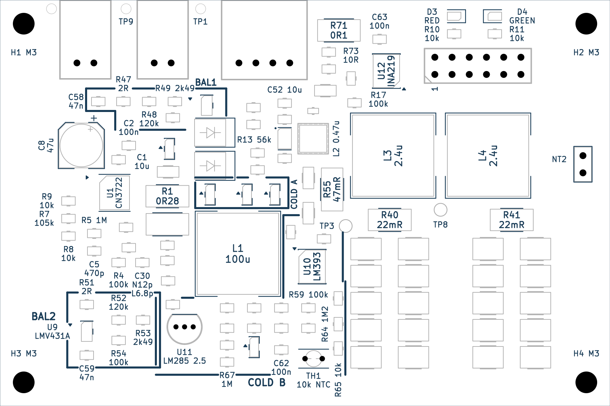
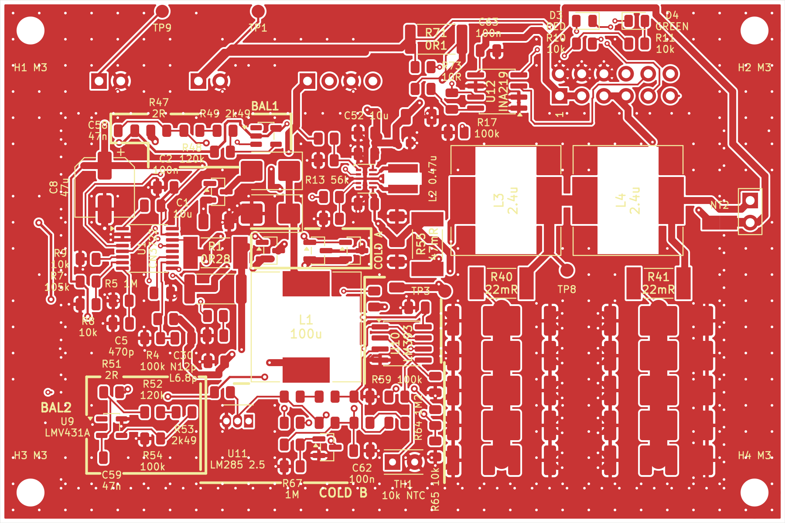
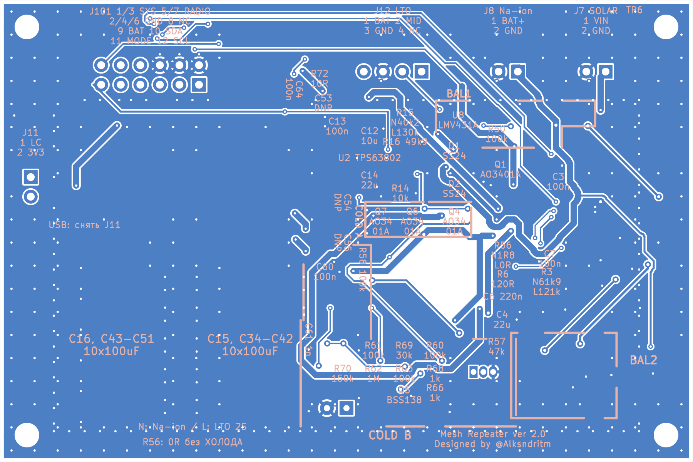
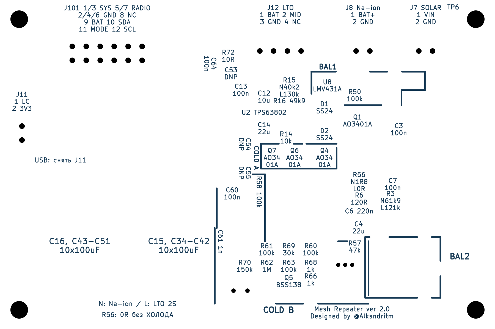
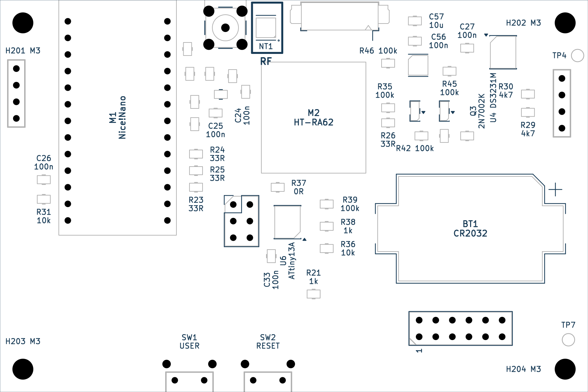
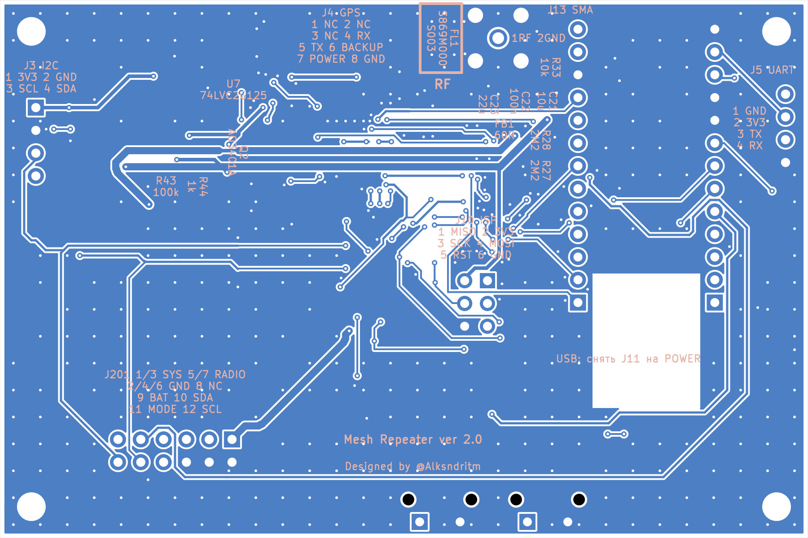
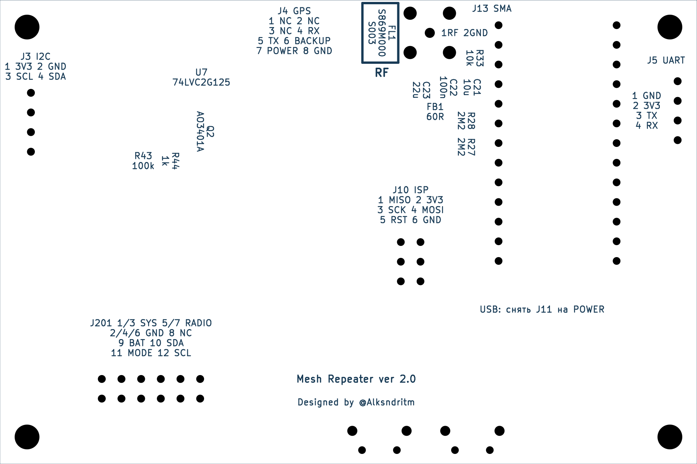

Mesh Repeater 2.0 · V2.0-A4
Designed by @Alksndritm · POWER и LOGIC 90×60 мм · KiCad 10.0.6
Перед подключением USB снять единственную J11 на POWER. Вернуть после отключения USB. После J11 медная звезда NT2 разделяет SYS_3V3 и RADIO_3V3.
Все компоненты POWER на одной стороне. Шунты 2512; INA219 на POWER. Контакты межплатного разъёма: 1/3 SYS, 5/7 RADIO, 2/4/6 GND, 8 NC, 9 BAT, 10 SDA, 11 MODE, 12 SCL. Экран имеет одно окно 17,2×6,8 мм под пластиковую планку.
В A4 маркировка POWER обновлена: подписи разъёмов выровнены над контактами в одном стиле, U2 TPS63802 записан горизонтально одной строкой, контуры BAL1/BAL2/COLD усилены до 0,30 мм с двух сторон и обходят C8 и L1. Сохранены групповые подписи конденсаторов и маркировка N/L. Свежий DRC POWER: 0 нарушений, 0 неразведённых цепей, 0 расхождений со схемой. Медь и положение компонентов не менялись. Проверка текущей маркировки. Прежние полные отчёты относятся к своим сохранённым снимкам A3; аппаратные ограничения сохраняются. Состав выпуска A4 и проверки.
В A4 LOGIC приведена к общему стилю POWER: 56 компонентов имеют по одной подписи, 28 дублей удалены, крупные модули и CR2032 подписаны под корпусами, текст ориентирован по фактическим корпусам. Разъёмы подписаны горизонтально; рамка RF-опции FL1/NT1 — 0,30 мм с обеих сторон. Свежий DRC LOGIC: 0 нарушений, 0 неразведённых цепей, 0 расхождений со схемой. Медь, маска, окно разрезания NT1 и положения деталей сохранены. Проверка текущей маркировки LOGIC.
Выпуск от 14.10.2026. GitHub A4 · Скачать текущий проект. Архив содержит актуальные проекты и необходимые зависимости; старые исходники, схемы, платы и резервные копии исключены. Текущие PDF схем и BOM в репозитории сохраняют имена A3, поскольку электрическая схема не менялась; в ZIP они названы A4.
POWER — читаемая маркировка спереди; серые линии обозначают корпуса
POWER — медь и маркировка, сторона компонентов
POWER — обратная сторона, проекция маркировки
POWER — текущая маркировка сзади и группы конденсаторов
LOGIC — читаемая маркировка спереди; серые линии обозначают корпуса
LOGIC — сторона компонентовLOGIC — обратная сторона
LOGIC — текущая маркировка сзади и RF-опция
SHIELD — окно и русская памятка Сборка — геометрия A3, сохранённая в A4
Сборка — геометрия A3, сохранённая в A4 Разнесённая сборка — геометрия A3, сохранённая в A4
Разнесённая сборка — геометрия A3, сохранённая в A4